変換イメージのギャラリーを作成
空間変換の多くのプロパティは、チェッカーボード イメージを変換することによって識別できます。
目次
概要
二次元空間変換、すなわち幾何学的変換は、ユークリッド平面の各ポイントをユークリッド平面の別のポイントに関連付けるマッピングです。以下の例では、幾何学的変換は、直交座標 (x,y) を使用したポイントを直交座標 (u,v) を使用した別のポイントにマッピングする方法を示す規則によって定義されます。チェッカーボード パターンは、入力イメージの平面の座標格子および各変換によってもたらされる歪みのタイプを視覚化する際に役立ちます。
イメージ 1: チェッカーボードを作成する
checkerboard は四角形のタイルと 4 つの固有の角を持つイメージを生成します。このイメージにより、幾何学的変換によってチェッカーボードのイメージがどのように変化するかが簡単にわかります。
この例を 1 回実行した後に、イメージ I を大きなチェッカーボードまたは好みのイメージに変えてみます。
I = checkerboard(10,2);
imshow(I)
title('original')
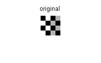 イメージ 2: チェッカーボードに無反射相似を適用する
無反射相似には、回転、スケーリング、並行移動が含まれます。形状と角度は保持されます。平行線は平行のままです。直線は直線のままです。
無反射相似の場合、
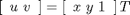
T は 4 つのパラメーターに依存する 3 行 2 列の行列です。
% Try varying these 4 parameters. scale = 1.2; % scale factor angle = 40*pi/180; % rotation angle tx = 0; % x translation ty = 0; % y translation sc = scale*cos(angle); ss = scale*sin(angle); T = [ sc -ss; ss sc; tx ty];
無反射相似はアフィン変換の一部であるため、以下を使用して tform 構造体を作成します。
t_nonsim = maketform('affine',T); I_nonreflective_similarity = imtransform(I,t_nonsim,'FillValues',.3); figure, imshow(I_nonreflective_similarity); title('nonreflective similarity')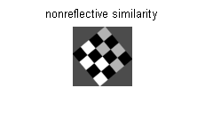
平行移動について:tx または ty をゼロ以外の値に変更した場合、出力イメージには何の影響もないことがわかります。平行移動を含む、変換に対応する座標を表示する場合は、次を実行します。
[I_nonreflective_similarity,xdata, ydata] = imtransform(I,t_nonsim,'FillValues',.3); figure, imshow(I_nonreflective_similarity,'XData',xdata,'YData',ydata) axis on title('nonreflective similarity')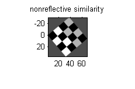
xdata と ydata は変換を表すことに注意してください。表示する出力イメージの部分を指定するには、関数 imtransform の 'XData' パラメーターと 'YData' パラメーターを使用します。
イメージ 3: チェッカーボードに相似を適用する
相似変換では、三角形は相似する三角形にマッピングされます。無反射相似変換は、相似変換の一部です。
相似では、方程式は無反射相似の場合と同じです。
T は、4 つのパラメーターとオプションの反射に依存する 3 行 2 列の行列です。
% Try varying these parameters. scale = 1.5; % scale factor angle = 10*pi/180; % rotation angle tx = 0; % x translation ty = 0; % y translation a = -1; % -1 -> reflection, 1 -> no reflection sc = scale*cos(angle); ss = scale*sin(angle); T = [ sc -ss; a*ss a*sc; tx ty];
相似はアフィン変換の一部であるため、以下を使用して tform 構造体を作成します。
t_sim = maketform('affine',T); % As in the translation example above, retrieve and display with xdata and ydata % to reveal the reflection. [I_similarity,xdata,ydata] = imtransform(I,t_sim,'FillValues',.3); figure, imshow(I_similarity,'XData',xdata,'YData',ydata) axis on title('similarity')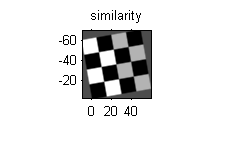
イメージ 4: チェッカーボードにアフィン変換を適用する
アフィン変換では、x と y の次元が個別にスケーリングまたは剪断され、変換、反射、回転が行われます。平行線は平行のままです。直線は直線のままです。相似は、アフィン変換の一部です。
アフィン変換では、方程式は相似および無反射相似の場合と同じです。
T は 3 行 2 列の行列で、6 つの要素はすべて異なります。
% Try varying any of the six elements of T. T = [1 0.3; 1 1; 0 0]; t_aff = maketform('affine',T); I_affine = imtransform(I,t_aff,'FillValues',.3); figure, imshow(I_affine) title('affine')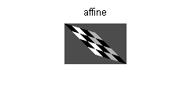
イメージ 5: チェッカーボードに射影変換を適用する
射影変換では、四角形は四角形にマッピングされます。直線は直線のままです。アフィン変換は、射影変換の一部です。
射影変換の場合:
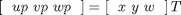
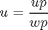
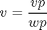
T は 3 行 3 列の行列で、9 つの要素はすべて異なります。
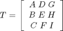
上記の行列方程式は、下の 2 つの式に相当します。
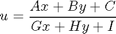
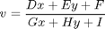
T の 9 つの要素のいずれかを変えて試してみます。
T = [1 0 0.008;
1 1 0.01;
0 0 1];
t_proj = maketform('projective',T);
I_projective = imtransform(I,t_proj,'FillValues',.3);
figure, imshow(I_projective)
title('projective')

イメージ 6: チェッカーボードに多項式変換を適用する
多項式変換では、x と y の多項式がマッピングを定義します。
2 次多項式変換では、次のように定義します。
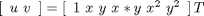
u と v は共に、x と y の 2 次多項式です。2 次多項式はそれぞれ 6 つの項があります。すべての係数を指定するために、T のサイズは 6 行 2 列です。
xybase = reshape(randn(12,1),6,2); t_poly = cp2tform(xybase,xybase,'polynomial',2); % Try varying any of the twelve elements of T. T = [0 0; 1 0; 0 1; 0.001 0; 0.02 0; 0.01 0]; t_poly.tdata = T; I_polynomial = imtransform(I,t_poly,'FillValues',.3); figure, imshow(I_polynomial) title('polynomial')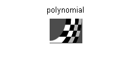
イメージ 7: チェッカーボードに区分的線形変換を適用する
区分的線形変換では、イメージの個々の三角形領域にアフィン変換が適用されます。この例では、イメージの左上の三角形領域は変更されませんが、イメージの右下の三角形領域が引き伸ばされます。
xy_input = [10 10; 10 30; 30 30; 30 10]; xy_base = [10 10; 10 30; 40 35; 30 10]; t_piecewise_linear = cp2tform(xy_input,xy_base,'piecewise linear'); I_piecewise_linear = imtransform(I,t_piecewise_linear); figure, imshow(I_piecewise_linear) title('piecewise linear')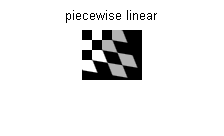
イメージ 8: チェッカーボードに正弦変換を適用する
次の例とそれに続く 2 つの例では、明示的なマッピング tmap_b を作成して、等間隔グリッドの各ポイント (xi,yi) を別のポイント (u,v) に関連付ける方法を示します。このマッピング tmap_b は tformarray が使用してイメージを変換します。
% locally varying with sinusoid [nrows,ncols] = size(I); [xi,yi] = meshgrid(1:ncols,1:nrows); a1 = 5; % Try varying the amplitude of the sinusoids. a2 = 3; imid = round(size(I,2)/2); % Find index of middle element u = xi + a1*sin(pi*xi/imid); v = yi - a2*sin(pi*yi/imid); tmap_B = cat(3,u,v); resamp = makeresampler('linear','fill'); I_sinusoid = tformarray(I,[],resamp,[2 1],[1 2],[],tmap_B,.3); figure, imshow(I_sinusoid) title('sinusoid')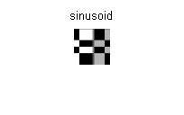
イメージ 9: チェッカーボードに樽形変換を適用する
樽形歪曲はイメージを中心から外側に放射状に変形します。歪みは中心から遠ざかるほど大きくなり、側面が凸状になります。
% radial barrel distortion xt = xi(:) - imid; yt = yi(:) - imid; [theta,r] = cart2pol(xt,yt); a = .001; % Try varying the amplitude of the cubic term. s = r + a*r.^3; [ut,vt] = pol2cart(theta,s); u = reshape(ut,size(xi)) + imid; v = reshape(vt,size(yi)) + imid; tmap_B = cat(3,u,v); I_barrel = tformarray(I,[],resamp,[2 1],[1 2],[],tmap_B,.3); figure, imshow(I_barrel) title('barrel')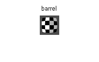
イメージ 10: チェッカーボードにピン クッション変換を適用する
ピンクッション歪曲は、3次方程式に負の偏角があるため樽形歪曲の逆になります。歪みは中心から遠ざかるほど大きくなり、側面が凹状になります。
% radial pin cushion distortion xt = xi(:) - imid; yt = yi(:) - imid; [theta,r] = cart2pol(xt,yt); a = -.0005; % Try varying the amplitude of the cubic term. s = r + a*r.^3; [ut,vt] = pol2cart(theta,s); u = reshape(ut,size(xi)) + imid; v = reshape(vt,size(yi)) + imid; tmap_B = cat(3,u,v); I_pin = tformarray(I,[],resamp,[2 1],[1 2],[],tmap_B,.3); figure, imshow(I_pin) title('pin cushion')

概要: チェッカーボードの空間変換をすべて表示
figure subplot(5,2,1),imshow(I),title('original') subplot(5,2,2),imshow(I_nonreflective_similarity),title('nonreflective similarity') subplot(5,2,3),imshow(I_similarity),title('similarity') subplot(5,2,4),imshow(I_affine),title('affine') subplot(5,2,5),imshow(I_projective),title('projective') subplot(5,2,6),imshow(I_polynomial),title('polynomial') subplot(5,2,7),imshow(I_piecewise_linear),title('piecewise linear') subplot(5,2,8),imshow(I_sinusoid),title('sinusoid') subplot(5,2,9),imshow(I_barrel),title('barrel') subplot(5,2,10),imshow(I_pin),title('pin cushion')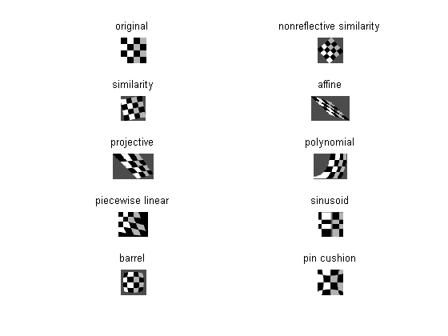
表示されているイメージのスケールは subplot によって変更されています。